Patches
Factory patches
Addivox ships with 13 factory patches:
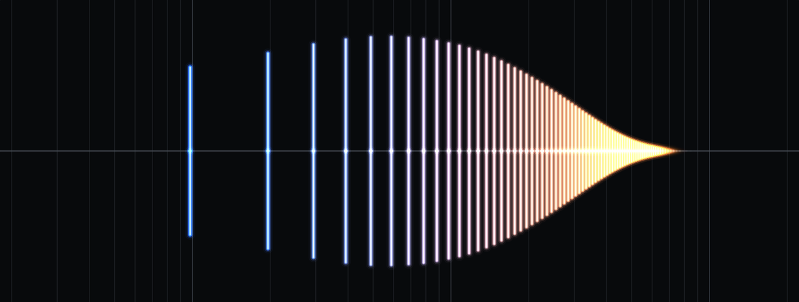 |
Bright Brass A clean bright brassy sound, ranging from tuba-like to trombone-like to trumpet-like. Has a smoothly tapering Level curve, and for lower notes, the peak is at a higher harmonic number. No formants. |
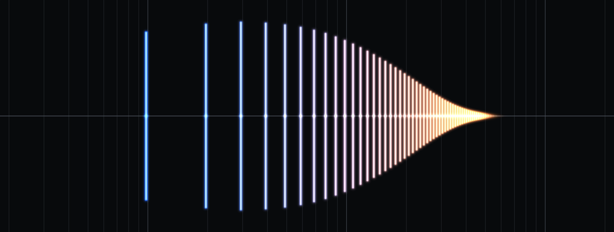 |
Warm Brass Similar to Bright Brass, except the Level curve peaks sooner and tapers faster, giving fewer high harmonics. |
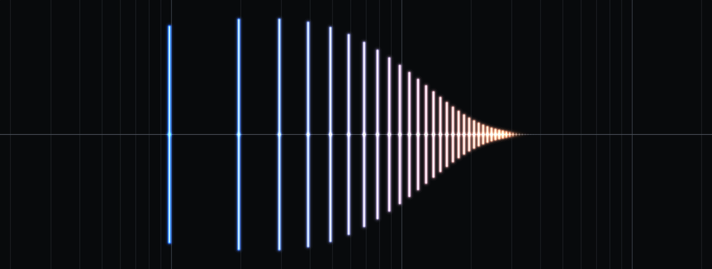 |
Mellow Brass Similar to Warm Brass, except the Level curve peaks sooner and tapers faster, giving even fewer high harmonics. |
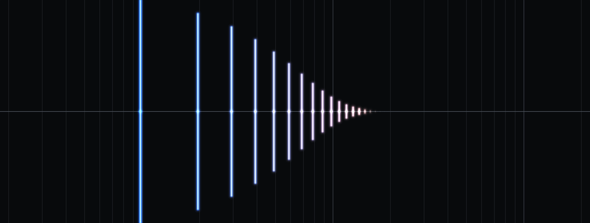 |
Dark Brass Similar to Mellow Brass, except the Level curve peaks sooner (first harmonic is always strongest) and tapers faster, giving even fewer high harmonics. |
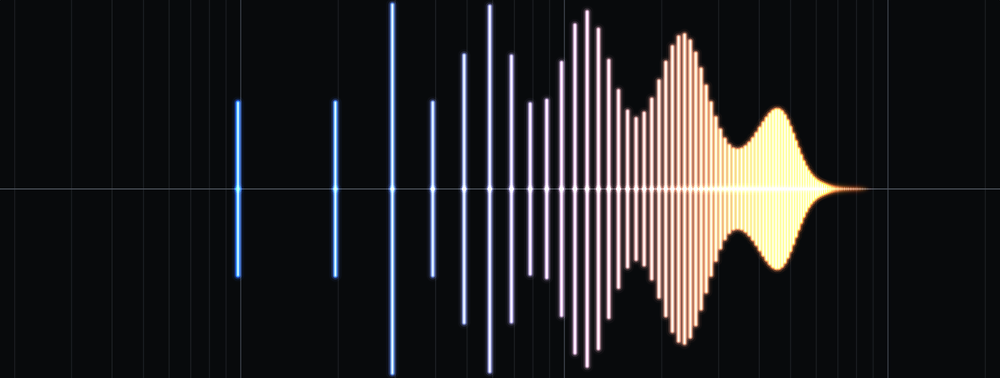 |
Bright Reed A bright woodwind-like sound with strong formants across the entire spectrum. |
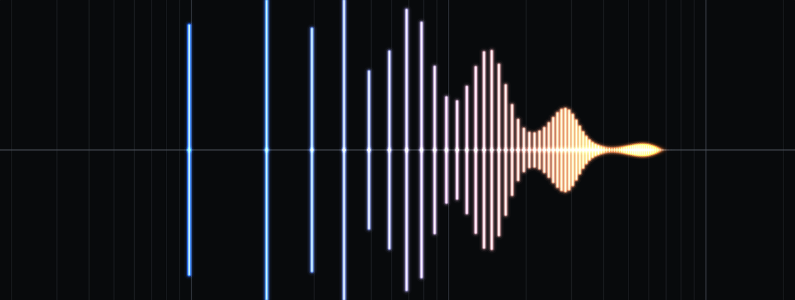 |
Warm Reed Similar to Bright Reed, but the Level curve peaks sooner giving weaker high harmonics and with different formant peaks. |
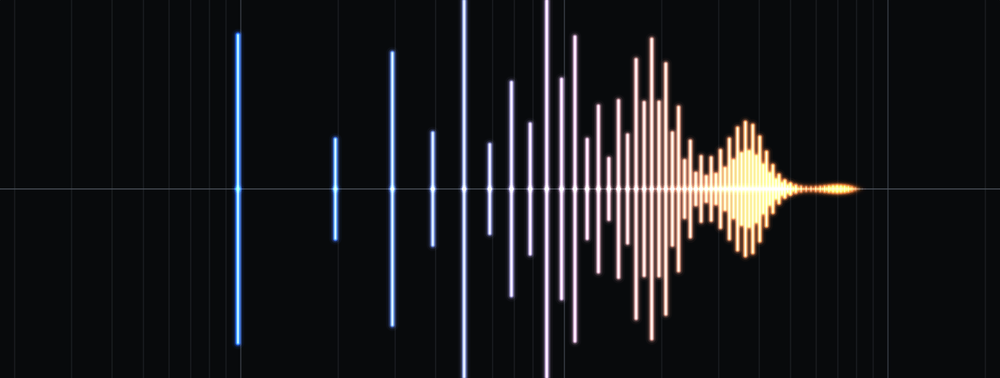 |
Hollow Reed Similar to Warm Reed, but with an odd-harmonic bias for a clarinet-like sound and with different formant peaks. |
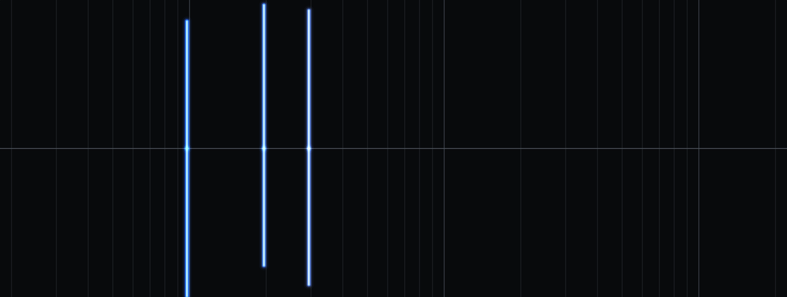 |
Tonewheel Organ 888 Inspired by a Hammond organ with drawbars set to 888000000. Contains a generous amount of level, pan and pitch variation to make the notes sound more lively. |
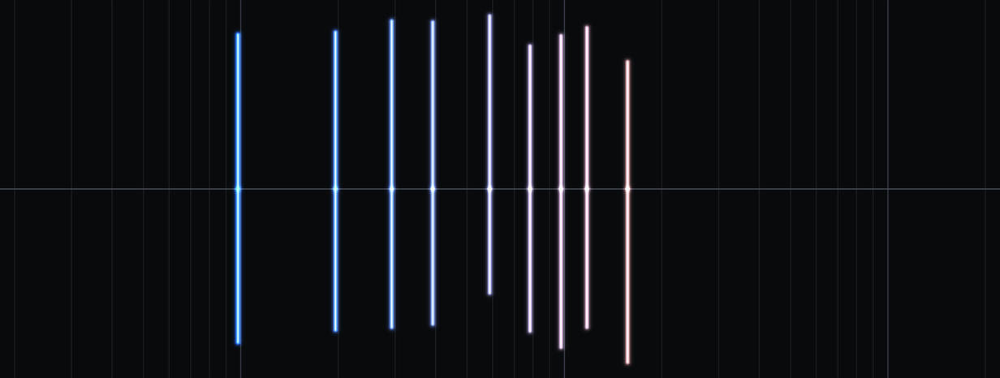 |
Tonewheel Organ Full Inspired by a Hammond organ with drawbars set to 888888888. Contains a generous amount of level, pan and pitch variation to make the notes sound more lively. |
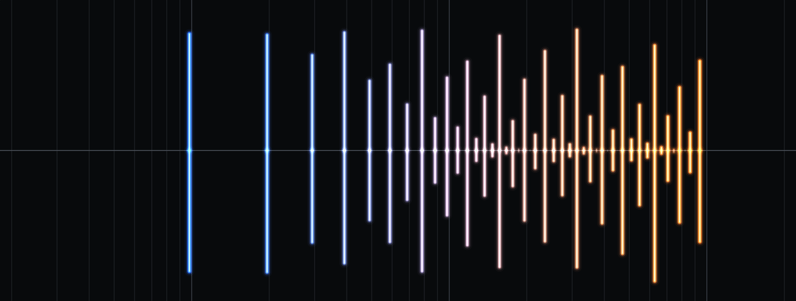 |
Full Pipe Organ Has harmonics at equal levels across the octaves for a big full-spectrum sound. Contains a bit of level, pan and pitch variation. |
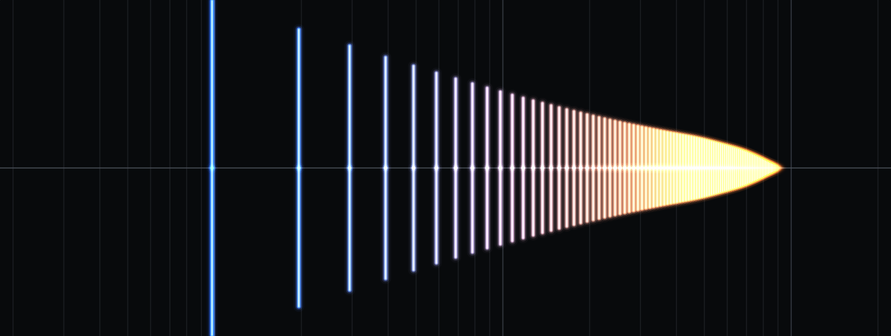 |
Simple Saw Level curve follows a 1/h shape, approximating a sawtooth wave. The top harmonics taper to zero to prevent a high-pitched whine sound at full breath for low notes. |
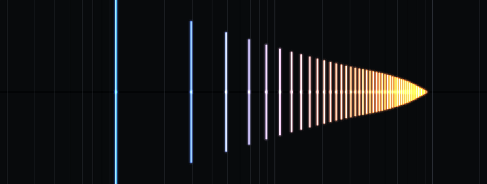 |
Simple Square Level curve follows a 1/h shape, odd harmonics only, approximating a square wave. The top harmonics taper to zero to prevent a high-pitched whine sound at full breath for low notes. |
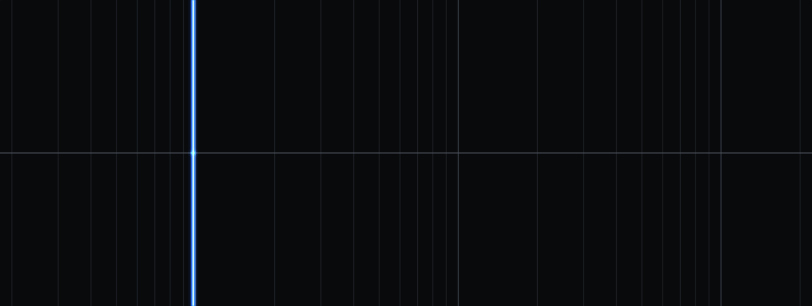 |
Simple Sine Just a single oscillator at the fundamental. As simple as it gets! |
Custom patches
You can create and save your own patches from within Addivox. Custom patches are stored as TOML text files in Addivox's patches folder:
- macOS:
~/Library/Application Support/Addivox/Patches/ - Windows:
%LOCALAPPDATA%\Addivox\Patches\
For the demo version, these folders are named AddivoxDemo instead of Addivox.
Patches placed in subdirectories of this folder appear in their own named group in the patch menu, which you can use to organise larger collections.
Patch file format
Patches are plain-text TOML files. Here is a minimal example of a single-key-note patch:
format_version = 1
name = "My Patch"
[voice_settings]
levelScale = 1.0
attackScale = 1.0
releaseScale = 1.0
levelVariationAmplitudeScale = 0.0
levelVariationRateScale = 1.0
pitchVariationAmplitudeScale = 0.0
pitchVariationRateScale = 1.0
panVariationAmplitudeScale = 0.0
panVariationRateScale = 1.0
portamentoTimeAtCC5MinSec = 0.001
portamentoTimeAtCC5MaxSec = 0.025
[effects_settings]
drive = 0.0
tone = 0.0
chorus = 0.0
[[key_notes]]
midi_note = 60
note_name = "C4"
level = [0.9, 0.8, 0.7, ...]
breath_power = [1.0, 1.0, 1.0, ...]
attack = [0.005, ...]
release = [0.01, ...]
pitch = [0.0, ...]
pan = [0.0, ...]
level_variation_amplitude = [0.25, ...]
level_variation_rate = [1.0, ...]
pitch_variation_amplitude = [5.0, ...]
pitch_variation_rate = [1.0, ...]
pan_variation_amplitude = [0.25, ...]
pan_variation_rate = [1.0, ...]
eq_freq_hz = []
eq_db = []
Each per-harmonic array contains exactly 100 values (one per harmonic). A patch with multiple key notes has one [[key_notes]] section for each. An optional [all_key_notes] section stores parameters that are locked in sync across all key notes (see Key Notes and Interpolation).
Because patches are plain text, you are welcome to open and edit them in any text editor. As long as the file follows the format above and has a .toml extension, Addivox will load it correctly.